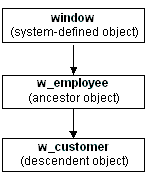

To create an array of windows, declare an array of the datatype of the window. For example, the following statement declares an array named myarray, which contains five instances of the window w_employee:
w_employee myarray[5]
You can also create unbounded arrays of windows if the number of windows to be opened is not known at compile time.
To open an instance of a window in an array, use the Open function and pass it the array index. Continuing the example above, the following statements open the first and second instances of the window w_employee:
Open(myarray[1]) // Opens the first instance
// of the window w_employee.
Open(myarray[2]) // Opens the second instance.
 Moving first instance opened The statements in this example open the second instance of
the window at the same screen location as the first instance. Therefore,
you should call the Move function in the script
to relocate the first instance before the second Open function
call.
Moving first instance opened The statements in this example open the second instance of
the window at the same screen location as the first instance. Therefore,
you should call the Move function in the script
to relocate the first instance before the second Open function
call.
Using arrays of windows, you can manipulate particular instances by using the array index. For example, the following statement hides the second window in the array:
myarray[2].Hide()
You can also reference controls in windows by using the array index, such as:
myarray[2].st_count.text = "2"
 Opening many windows When you open or close a large number of instances of a window,
you may want to use a FOR...NEXT control structure
in the main window to open or close the instances. For example:
Opening many windows When you open or close a large number of instances of a window,
you may want to use a FOR...NEXT control structure
in the main window to open or close the instances. For example:
w_employee myarray[5]
for i = 1 to 5
Open(myarray[i])
next
In the previous example, all windows in the array are the same type. You can also create arrays of mixed type. Before you can understand this technique, you need to know one more thing about window inheritance: all windows you define are actually descendants of the built-in datatype window.
Suppose you have a window w_employee that is defined from scratch, and w_customer that inherits from w_employee. The complete inheritance hierarchy is the following:

The system-defined object named window is the ancestor of all windows you define in PowerBuilder. The built-in object named window defines properties that are used in all windows (such as X, Y, and Title).
If you declare a variable of type window, you can reference any type of window in the application. This is because all user-defined windows are a kind of window.
The following code creates an array of three windows. The array is named newarray. The array can reference any type of window, because all user-defined windows are derived from the window datatype:
window newarray[3]
string win[3]
int iwin[1] = "w_employee"
win[2] = "w_customer"
win[3] = "w_sales"
for i = 1 to 3
Open(newarray[i], win[i])
next
The code uses this form of the Open function:
Open ( windowVariable, windowType )
where windowVariable is a variable of type window (or a descendant of window) and windowType is a string that specifies the type of window.
The preceding code opens three windows: an instance of w_employee, an instance of w_customer, and an instance of w_sales.
Table 6-1 shows when you use reference variables and when you use arrays to manipulate window instances.
Suppose you use w_employee to provide or modify data for individual employees. You may want to prevent a second instance of w_employee opening for the same employee, or to determine for which employees an instance of w_employee is open. To do this kind of management, you must use an array. If you do not need to manage specific window instances, use reference variables instead to take advantage of their ease of use.